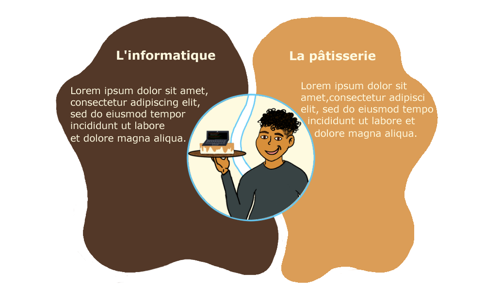

<section class="section is-small">
    <div class="container is-max-desktop section has-text-centered"  style="padding-top: 0 !important; padding-bottom: 0 !important; margin-top: 0 !important;  margin-bottom: 0 !important;" >
        <article class="message is-primary">
            <div class="message-header">
              <p>Informations</p>
              <button class="delete" aria-label="delete"></button>
            </div>
            <div class="message-body">
              Site en cours de construction
            </div>
          </article>
        <!--<figure class="image is-inline-block" style="height: 100%; width: 100%px;">
          
        </figure>-->
    </div>
</section>


